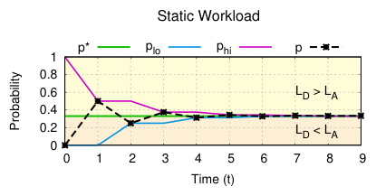
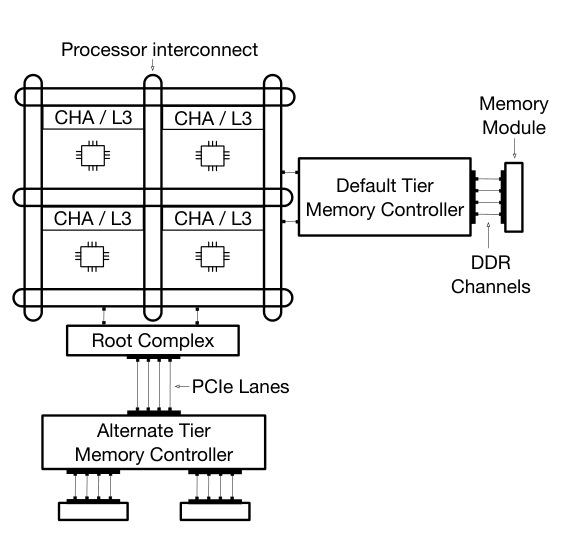
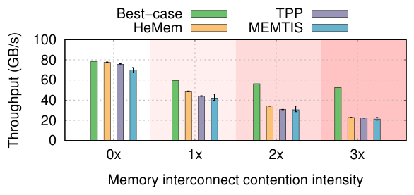
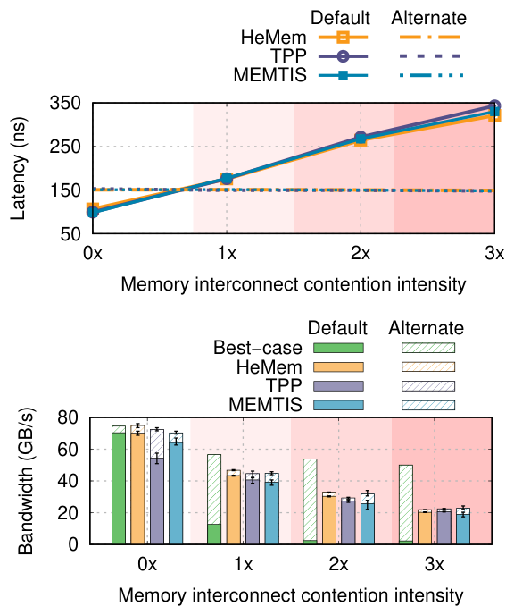
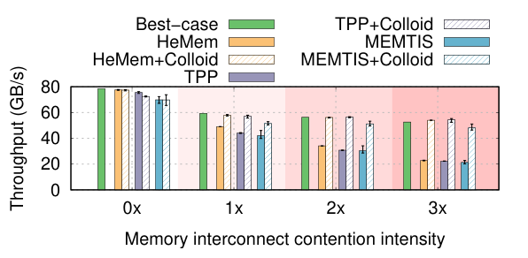
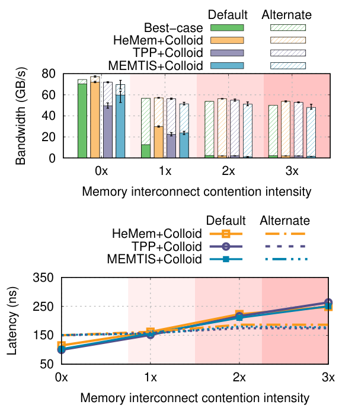
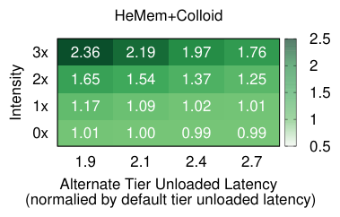
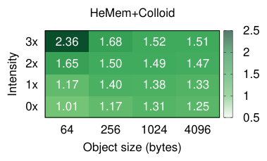
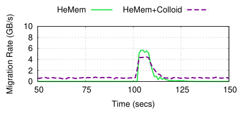
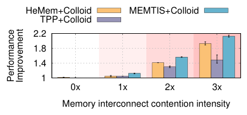

Tiered Memory Management: Access Latency is the Key!
This page was written by an AI model to give a high-level overview of the paper. Please check the paper for detail: ACM Digital Library.
Memory is an increasingly large share of server cost (about 37% at Meta, about 50% at Microsoft Azure, as cited in the paper), and classical DRAM scaling has stalled, particularly for memory interconnect bandwidth. On recent Intel server generations, cores can generate 2.98x to 4.5x more memory traffic than the interconnect can sustain, and on AMD Genoa the gap reaches 9.37x. This has driven tiered memory architectures that add a second memory tier, usually with higher hardware-specified ("unloaded") latency, alongside local DRAM: remote-socket memory, Compute Express Link (CXL) attached memory, or High Bandwidth Memory. A wave of memory tiering systems (HeMem, TPP, MEMTIS, and others) has innovated on how to track hot pages and migrate them, but every one of them uses the same placement rule: pack as many hot pages as possible into the "default tier" (the tier with the lowest unloaded latency), and place the rest in "alternate tiers."
That rule rests on an implicit assumption: that the default tier's access latency stays below the alternate tier's latency even while it absorbs most of the hot traffic. The paper shows this assumption is false under realistic load. It is well known in computer architecture that "loaded" latency, the latency seen when multiple memory requests are in flight, can be far higher than unloaded latency, and that this inflation can occur even when the interconnect's bandwidth is nowhere near saturated, because of queueing inside the memory controller and load imbalance across DRAM banks. Using a GUPS microbenchmark with a controlled contention generator on an 8-channel dual-socket server, the authors measure the default tier's access latency inflating by up to 5x over its unloaded value, ending up 2.4x higher than the alternate tier's latency. Existing systems do not react: they keep more than 75 to 90% of hot-set bandwidth on the default tier regardless, and as a result their throughput falls as much as 2.3x (HeMem), 2.36x (TPP) and 2.46x (MEMTIS) below the best achievable placement.
The paper's fix is a different placement principle: page placement across tiers should balance the tiers' (loaded) average access latencies, not just pack hot pages into the tier with the lowest unloaded latency. The reasoning follows directly from how memory-bound throughput works. Each core can keep only a bounded number of memory requests in flight, so per-core throughput is T = N·64/L, where N is that bound, L is the average access latency, and 64 is the size of one cache-line request. The average latency across tiers is p·L_D + (1-p)·L_A, where p is the fraction of hot-page accesses sent to the default tier; this expression is minimized, and throughput maximized, exactly when L_D = L_A (or at p = 1 if the default tier is never the bottleneck). Balancing latencies therefore automatically captures both tiers' unloaded latencies and any contention along the path to memory, whether or not bandwidth is saturated.
Colloid turns this principle into a mechanism with two parts. First, it measures each tier's loaded access latency at fine, sub-quantum granularity by sampling queue occupancy and request arrival rate at the processor's Caching and Home Agent (CHA) and applying Little's Law. Second, it runs a binary-search-style page placement algorithm that tracks two watermarks bracketing the unknown equilibrium fraction p*, and migrates just enough hot pages each quantum to move the system toward the midpoint of those watermarks, with a migration-rate limit that shrinks as the system nears equilibrium. Colloid reuses each underlying system's existing access-tracking and migration machinery, so it only replaces the placement decision.
The authors integrate Colloid into HeMem, TPP and MEMTIS (a few hundred lines of code each). Across a GUPS workload with memory interconnect contention intensities from 0x to 3x, Colloid brings all three systems to within 3%, 8% and 13% of best-case throughput, respectively, versus gaps of up to 2.3x, 2.36x and 2.46x without it. On three real applications, GAPBS graph PageRank, the Silo in-memory database, and the CacheLib key-value cache, Colloid improves throughput by up to 1.92x, 1.25x and 1.93x respectively at higher contention, while adding under 2% CPU overhead for HeMem and MEMTIS and 4 to 6.5% for TPP.

Key takeaways
- Existing memory tiering systems (HeMem, TPP, MEMTIS) all pack hot pages into the tier with the lowest unloaded latency, assuming it stays the fastest tier under load.
- That assumption breaks under memory interconnect contention: default tier loaded latency can inflate 5x and exceed the alternate tier's latency by 2.4x, even without bandwidth saturation.
- Colloid's principle: balance the tiers' average (loaded) access latencies rather than maximize the default tier's hot-page share; this maximizes throughput because T = N·64/L.
- Mechanism: CHA hardware counters plus Little's Law measure per-tier loaded latency; a watermark-based binary search (p_lo, p_hi) decides how many pages to migrate each quantum, with a dynamic migration-rate limit.
- Integrated into HeMem, TPP and MEMTIS with a few hundred lines of code each, Colloid brings all three within 3-13% of best-case throughput and improves three real applications by up to 1.9x-2.1x under contention.
From "pack the default tier" to balancing access latencies
The tiered memory model, why the default-tier assumption fails under load, the balancing principle, latency measurement, the placement algorithm, and integration into three existing systems.
1 · The tiered memory model and the default-tier assumption
A tiered memory architecture exposes two or more kinds of cache-coherent memory in one physical address space, each reachable through its own memory controller. Cores, L3 cache slices and Caching and Home Agent (CHA) slices sit on the on-chip processor interconnect together with the default tier's memory controller; an alternate tier, for example CXL-attached memory, is reached through a different physical path (in the paper's illustration, the root complex and PCIe lanes). The default tier is defined as the tier with the lowest hardware-specified, unloaded access latency; all others are alternate tiers.

Prior memory tiering systems (HeMem, TPP, MEMTIS, and others cited by the paper) differ in how they track per-page hotness (PEBS sampling, hint page faults, time-to-fault) and how they migrate pages, but they share one placement policy: fill the default tier with as many hot pages as will fit, and place the remainder in alternate tiers. This policy is correct only if the default tier's access latency stays below the alternate tier's latency while serving most of the hot traffic.
2 · Why loaded latency breaks that assumption
Unloaded latency is the access latency with only one request in flight; loaded latency is the latency under multiple concurrent requests, and it can exceed unloaded latency for two distinct reasons the paper draws from prior architecture work. First, latency rises from queueing once the corresponding interconnect's bandwidth saturates; the saturation point itself is hard to predict, varying by up to 1.75x between read-heavy and write-heavy traffic and reaching as much as 2.5x below theoretical peak bandwidth. Second, and more surprising, latency can rise even far from saturation, because of contention inside a memory module's internal hierarchy: load imbalance across DRAM banks and poor locality within a bank cause queueing at the memory controller. The paper calls this general regime memory interconnect contention.
3 · Measuring the problem
On a dual-socket Intel Xeon Platinum 8362 server, the authors treat one socket's local memory as the default tier (32 GB, 70 ns unloaded latency) and the other socket's memory, reached over the UPI link, as the alternate tier (96 GB, 135 ns unloaded latency). A GUPS workload accesses a 24 GB hot region of a 72 GB working set from 15 cores, while a separate memory antagonist running on 5, 10 or 15 cores generates sequential traffic pinned to the default tier to create 1x, 2x and 3x contention intensity (0x is the uncontended baseline).

At 0x contention, HeMem, TPP and MEMTIS are within 1.5%, 4.6% and 10.1% of the best achievable placement (found by manually sweeping the default-tier share with mbind). As contention rises, the gap grows sharply: even at 1x intensity the three systems are already 1.21x, 1.35x and 1.41x below best-case, reaching 2.3x, 2.36x and 2.46x by 3x intensity.
4 · Root cause: inflated latency and tier-agnostic placement

Measuring per-tier latency with CHA hardware counters, the authors find that default tier latency inflates by 2.5x, 3.8x and 5x at 1x, 2x and 3x contention intensity, ending up 1.2x, 1.8x and 2.4x higher than the alternate tier's latency. The best-case placement reacts to this by moving hot pages away from the default tier: its share of total bandwidth drops to 25%, 4.5% and 4% at 1x, 2x and 3x intensity. HeMem, TPP and MEMTIS do not react, keeping more than 90%, 75% and 85% of bandwidth, respectively, on the default tier independent of contention. Since per-core throughput is T = N·64/L, and default tier latency rises about 3.5x from 0x to 3x intensity, each system's throughput falls by a similar factor (3.42x, 3.39x, 3.29x).
5 · The principle of balancing access latencies
Let L_D and L_A be the current average access latencies of the default and alternate tier, and let p be the sum of access probabilities of pages currently placed in the default tier. The average memory access latency is p·L_D + (1-p)·L_A. If L_D < L_A, increasing p reduces this average; if L_D > L_A, decreasing p reduces it; if L_D = L_A, p no longer matters. So the throughput-maximizing operating point is L_D = L_A (the equilibrium point p*), unless the default tier remains faster even at p = 1, in which case the optimum is to use it exclusively. The principle generalizes to more than two tiers by applying the same reasoning recursively, starting with the tier of smallest latency.
6 · Measuring per-tier latency: CHA counters and Little's Law
Colloid uses the CHA, which already queues every memory request after an L3 miss and forwards it to the correct tier, as its vantage point. During each quantum it reads, per tier, the average queue occupancy (O_D, O_A) and the average request arrival rate (R_D, R_A), then applies Little's Law: L_D = O_D/R_D, L_A = O_A/R_A. The sum p = R_D/(R_D+R_A) gives the current default-tier access-probability share. The only latency this leaves out is CPU-to-CHA latency, which the paper measures as roughly 5 ns out of a 70 ns unloaded default-tier latency, and which shrinks in relative importance as contention latency grows. Occupancy and rate measurements are smoothed with an Exponentially Weighted Moving Average to trade a little reaction time for stability.
7 · The Colloid page placement algorithm
Each quantum, Colloid computes L_D, L_A and p, decides promotion (if L_D < L_A) or demotion (otherwise), and then computes a desired shift Δp using a binary-search-style procedure over two watermarks, p_lo and p_hi, initialized to 0 and 1. If |L_D - L_A| is within a small threshold δ·L_D, Colloid treats the tiers as balanced and does nothing. Otherwise it updates p_lo (if L_D < L_A) or p_hi (otherwise) to the current p, and targets the midpoint (p_lo+p_hi)/2. Because the watermark gap shrinks every quantum while p and p* both stay bracketed between p_lo and p_hi, p provably converges to p* for a static workload. Figure 4's three panels illustrate this: (a) static workload converging to p*; (b) a sudden change in the workload's access pattern, which is absorbed automatically because the watermarks are refreshed before Δp is computed; (c) a sudden change in p* itself (for example from a change in contention), which Colloid detects by noticing the watermarks have converged without the latencies being balanced, and handles by resetting the stale watermark back to 0 or 1.
8 · Choosing which pages to migrate, and how many
Given Δp, Colloid sets a migration limit for the quantum to the minimum of Δp·(R_D+R_A) (the traffic that would exactly realize the desired probability shift) and the underlying system's existing static per-quantum migration-rate cap. This dynamic cap prevents Colloid from migrating a large volume of low-probability pages just to satisfy a small Δp, which would otherwise cause oscillation around the equilibrium point. Within that budget, Colloid asks the underlying system's own access-tracking structures for a set of pages whose access probabilities sum to at most Δp and whose sizes fit the migration limit and destination-tier capacity; the three systems differ in what structure is available (see §9), but the selection logic is the same.
9 · Integrating Colloid into HeMem, TPP and MEMTIS
- HeMem (520 LOC added). HeMem's PEBS-based frequency counts are used directly as access probabilities. Its binary hot/cold lists are replaced with five frequency-range bins per tier so Colloid can accumulate pages up to Δp by iterating over bins, on HeMem's existing 10 ms migration-thread quantum.
- MEMTIS (411 LOC added). MEMTIS's existing hot lists (built from its dynamic-rate PEBS sampling and dynamic hot/cold threshold) are scanned directly to find pages summing to Δp, on the alternate-tier
kmigraterdthread (500 ms quantum); the default-tier thread's capacity-based demotion is left unchanged, and per-page size is accounted for when MEMTIS's hugepage splitting/coalescing is in play. - TPP (about 315 LOC added, Linux kernel v6.3). TPP has no per-page frequency count, so Colloid uses a page's time-to-fault (the delay between being marked and its next hint page fault) as a proxy: a page with access probability p and tier request rate r is expected to fault after Δt = 1/(p·r), so p is estimated as 1/(Δt·r). The hint-fault handler is modified to promote or demote a faulting page based on this estimate and the current Δp, with a dedicated CHA-sampling kernel thread (as in HeMem).
Evaluation of all three integrations, along with sensitivity studies, is covered in the Evaluation tab.
Evaluation
Steady-state throughput, convergence under dynamic workloads, and real-application results for HeMem, TPP and MEMTIS with and without Colloid.
All experiments run on a dual-socket server, using only one socket's cores to keep the default/alternate tier split fixed; the GUPS microbenchmark generates controlled contention with a memory antagonist, while three real applications provide end-to-end validation. Unless noted, all systems use their default parameters, and Colloid uses ε = 0.01 and δ = 0.05.
| What | Value in the paper |
|---|---|
| Platform | Dual-socket Intel Xeon Platinum 8362 (32 cores/socket, 1.25 MB L2/core, 48 MB LLC, 8x 3200 MHz DDR4 channels/socket, 205 GB/s theoretical max bandwidth); sockets linked by UPI at 75 GB/s per direction |
| Tiers used | Default tier: local socket memory, 32 GB, 70 ns unloaded latency. Alternate tier: remote socket memory, 96 GB, 135 ns unloaded latency (varied up to 2.7x default in one study) |
| Microbenchmark | GUPS: 72 GB working set, 24 GB random hot set, 64 B objects (varied 64-4096 B), 1:1 read/write, 15 application cores, antagonist on 0/5/10/15 cores for 0x-3x contention |
| Real workloads | GAPBS PageRank on a Twitter graph; Silo transactional database under YCSB-C (60 GB working set); CacheLib under the HeMemKV CacheBench workload (75 GB working set) |
| Baselines | HeMem, TPP (Linux 6.3, Transparent Huge Pages enabled), MEMTIS, each with and without Colloid; a manually swept best-case placement via mbind |
| Metrics | Steady-state throughput (GB/s or application-specific), convergence time after workload/contention changes, migration rate, CPU overhead |
Colloid brings all three systems near best-case throughput, independent of contention

What it shows. GUPS throughput (GB/s) at 0x-3x memory interconnect contention intensity, for the best-case placement and for HeMem, TPP and MEMTIS with and without Colloid. At 0x intensity, Colloid matches baseline performance for all three systems. As contention increases, Colloid's benefit grows: 1.2-2.3x for HeMem, 1.35-2.35x for TPP, 1.29-2.3x for MEMTIS. With Colloid, all three systems stay within 3% (HeMem), 8% (TPP) and 13% (MEMTIS) of best-case throughput across all intensities.
What to take from it. The gains track exactly where the baseline systems were shown to fail in Figures 1-2: as contention grows, the fixed default-tier-packing policy degrades while Colloid's latency-balancing policy tracks the moving optimum. This is the paper's headline result.
Colloid shifts bandwidth and balances tier latencies the way the best-case placement does

What it shows. Panel (a) shows per-tier bandwidth usage for the best-case and for each Colloid-enabled system across 0x-3x intensity; panel (b) shows the corresponding per-tier access latencies. At 0x intensity Colloid places nearly the whole hot set in the default tier, like the uncontrolled baselines. At 1x intensity it balances the hot set across tiers to equalize their latencies; at 2x and 3x it moves the entire hot set to the alternate tier, and even though default tier latency still exceeds alternate tier latency at that point, the gap is far smaller than the gap measured without Colloid in Figure 2(a).
What to take from it. Colloid's bandwidth allocation converges toward the best-case allocation shown earlier in Figure 2(b), confirming that the throughput gains in Result 1 come from the mechanism behaving as the principle of balancing access latencies predicts, not from an unrelated side effect.
Benefits persist even when the alternate tier's unloaded latency is much higher

What it shows. Heatmaps of Colloid's throughput improvement (with Colloid normalized by without) for HeMem, TPP and MEMTIS, across contention intensities 0x-3x (rows) and alternate-tier unloaded latency ranging from 1.9x to 2.7x the default tier's latency (columns, achieved by reducing the remote socket's uncore frequency). Benefits grow with contention intensity and shrink as alternate-tier unloaded latency grows, since fewer hot pages can be placed there before its own latency exceeds the default tier's. Even at the most pessimistic setting (2.7x), Colloid still improves throughput by 1.01-1.76x (HeMem), 1.03-1.76x (TPP) and 1.01-1.63x (MEMTIS).
What to take from it. Current CXL-attached memory has roughly 2x higher unloaded latency than local DRAM, within the range tested here. The authors note that reducing uncore frequency also reduces the alternate tier's bandwidth as a side effect, which only understates Colloid's benefit relative to real hardware with comparable latency but unreduced bandwidth.
Benefits hold across object sizes, and appear even without contention for larger objects

What it shows. The same normalized-improvement heatmaps, now varying GUPS object size from 64 to 4096 bytes instead of alternate-tier latency. For objects of 256 bytes and larger, Colloid helps even at 0x contention intensity: 1.17-1.31x (HeMem), 1.18-1.35x (TPP), 1.21-1.35x (MEMTIS). At higher contention intensities, Colloid's benefit shrinks somewhat as object size grows.
What to take from it. Larger objects make access patterns more sequential, which improves hardware prefetching and raises effective per-core memory-level parallelism (the paper measures a 2.82x increase in in-flight L3 misses per core for HeMem going from 64 B to 4096 B objects at 0x intensity). This alone is enough to push default tier latency above alternate tier latency, which is why Colloid helps even without an explicit contention generator. At higher contention and larger objects the alternate tier itself approaches its bandwidth limit (measured at 96% of theoretical maximum for 4096 B objects at 3x intensity, versus 53% for 64 B objects), capping the additional throughput Colloid can extract.
Colloid tracks dynamic workload and contention changes about as fast as the baseline systems, at a small migration-traffic cost

What it shows. Per-second migration rate over time for HeMem and HeMem+Colloid, measured for the same experiments in which the GUPS hot set is abruptly changed at a fixed instant. Both systems show a spike in migration traffic right after the change; HeMem+Colloid's migration rate ramps down more gradually than HeMem's because of Colloid's dynamic migration limit, which shrinks as the system nears its new equilibrium. In the companion instantaneous-throughput measurements (Figure 9, not shown here), HeMem, TPP and MEMTIS with and without Colloid all recover to their respective steady-state throughput after a workload change, and, under a 3x contention-intensity change introduced partway through a run, Colloid-enabled systems converge within about 10 seconds (HeMem, MEMTIS) to throughput close to the best-case for the new intensity, while the unmodified baselines do not react and stay at degraded throughput; TPP converges on a longer timescale (about 250 seconds) consistent with its slower hot-page identification.
What to take from it. The more gradual ramp-down costs HeMem+Colloid only about 3 extra seconds of convergence time after a workload change, and this overhead does not scale with the size of the change. In steady state, Colloid's migration rate stays under HeMem's peak migration rate and adds under 0.7% of application throughput in migration overhead for HeMem (under 1.6% for TPP, under 4.5% for MEMTIS).
End-to-end gains on three real applications with different access patterns

What it shows. Performance improvement from adding Colloid, across 0x-3x contention intensity, for GAPBS PageRank on a Twitter graph, the Silo in-memory database under YCSB-C, and CacheLib under the HeMemKV workload, each with a default tier sized to one-third of the working set. GAPBS: Colloid improves HeMem by 1.05-1.92x, TPP by 1.05-1.48x, MEMTIS by 1.12-2.12x. Silo: HeMem 1.13-1.25x, TPP 1.09-1.17x, MEMTIS 1.08-1.17x at higher contention (matching baseline at low contention). CacheLib: at 2x and 3x intensity, HeMem improves 1.37-1.74x, TPP 1.42-1.79x, MEMTIS 1.48-1.93x.
What to take from it. The gains generalize beyond the synthetic GUPS workload to applications with graph-skewed, Zipfian, and cache-style access patterns and different compute-to-memory bandwidth demands. TPP's gains on GAPBS are smaller than HeMem's and MEMTIS's, which the paper attributes to TPP needing longer to identify hot pages via hint faults.
FAQ
Q·What exactly is wrong with existing memory tiering systems?▾
They all place pages using one rule: fill the "default tier" (the memory with the lowest hardware-specified, unloaded latency) with as many hot pages as it can hold, and put the rest elsewhere. That rule assumes the default tier stays the lowest-latency tier even while absorbing most of the hot traffic. Under memory interconnect contention, the paper shows that assumption is false, and the systems keep placing pages as if it were still true.
Q·What is "memory interconnect contention," and how is it different from running out of bandwidth?▾
It is the condition where a memory tier's loaded access latency (latency with several requests in flight) exceeds its unloaded latency. This can happen because the interconnect's bandwidth is saturated, but it can also happen well before saturation, because of queueing inside a memory module from bank load imbalance or poor access locality. The paper's point is that the second case is common and is invisible if you only watch bandwidth utilization.
Q·What is the "principle of balancing access latencies" in one sentence?▾
Place pages so that the default and alternate tiers' average access latencies become roughly equal, rather than so that the default tier holds as many hot pages as possible; this maximizes throughput because per-core throughput equals N·64/L, so minimizing the probability-weighted average latency across tiers maximizes it.
Q·How does Colloid measure each tier's access latency cheaply?▾
It reads hardware performance counters at the processor's Caching and Home Agent (CHA), which already queues every post-L3-miss memory request before forwarding it to a tier. Sampling the average queue occupancy and arrival rate per tier and applying Little's Law (latency = occupancy / rate) gives the average latency without instrumenting the memory modules themselves.
Q·Why not just balance bandwidth usage across tiers instead of latency?▾
The paper compares this to BATMAN, a prior bandwidth-centric approach, and argues it is suboptimal for two reasons: it ignores differences in tiers' unloaded latency, so it can send pages to a tier with higher latency even when nothing is contended; and latency can inflate well before bandwidth saturates, so a bandwidth-only signal misses contention that a latency-based signal catches automatically.
Q·How does Colloid decide how many pages to move each round, and why not just move all the hot pages at once?▾
It tracks two watermarks (p_lo, p_hi) that bracket the unknown equilibrium fraction p* of accesses that should go to the default tier, and each quantum computes a shift Δp toward the midpoint of these watermarks, migrating only enough pages to cover that shift (capped by a dynamic migration-rate limit). Moving all hot pages at once, as existing systems effectively do, overshoots the equilibrium and can cause oscillation; moving too few delays convergence.
Q·What happens if the workload or the contention level changes while Colloid is running?▾
A change in which pages are hot is absorbed automatically, since the watermarks are recomputed from the current access probability before the next shift is calculated. A change in contention level (which moves the equilibrium point p* itself) is handled by detecting that the watermarks have converged without the tiers' latencies actually being balanced, and resetting the stale watermark back to its initial value (0 or 1) so the search can restart toward the new equilibrium.
Q·Which systems was Colloid integrated into, and how invasive was it?▾
HeMem, TPP (on Linux kernel 6.3) and MEMTIS, with 520, about 315, and 411 lines of code added respectively. In each case, Colloid replaces only the page placement decision, reusing the system's own access-tracking data structures (PEBS-based frequency counts for HeMem and MEMTIS, hint-fault time-to-fault for TPP) and its existing migration thread and quantum.
Q·Does Colloid need new hardware?▾
No. It relies on CHA performance counters that the paper states are already available on recent Intel and AMD processors for measuring per-tier queue occupancy and request rate. No new memory controller or device hardware is proposed.
Q·Does Colloid work with more than two memory tiers?▾
The principle generalizes: if tier latencies are unequal, shifting hot pages toward the lowest-latency tier reduces average latency, and the same reasoning can be applied recursively to the tier with the next-smallest latency, and so on, until all tiers' latencies are equal. The paper's implementation and evaluation, however, use only two tiers (a default and one alternate tier).
Q·What CPU overhead does Colloid add?▾
Under 2% for HeMem and MEMTIS, independent of contention intensity. TPP sees 4-6.5% overhead because its Colloid implementation dedicates an additional core to sampling CHA counters at microsecond granularity, similar to what HeMem already does.
Q·How does this relate to classical NUMA memory placement work, like Carrefour?▾
Carrefour also balances load (request rate) across NUMA nodes, but request-rate balancing is a special case that works only when all tiers have equal unloaded latency and never becomes contended; applied to tiered memory with unequal unloaded latencies, it would unnecessarily send pages to a tier with higher latency even when uncontended, and under contention, balancing raw request rates (rather than latency) can still leave throughput suboptimal.
Q·Is Colloid's code available?▾
Yes. The paper states that implementations for HeMem, TPP and MEMTIS, along with documentation to reproduce the results, are available at the authors' GitHub repository (host-architecture/colloid).